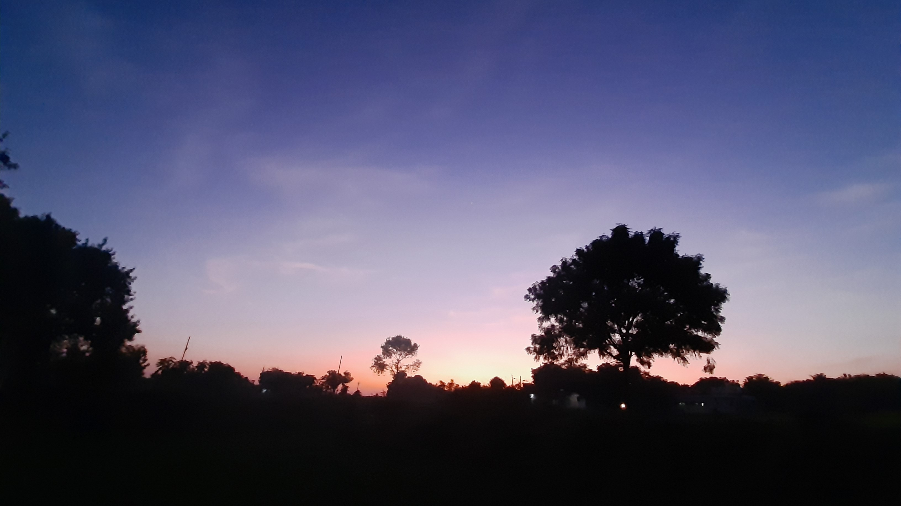
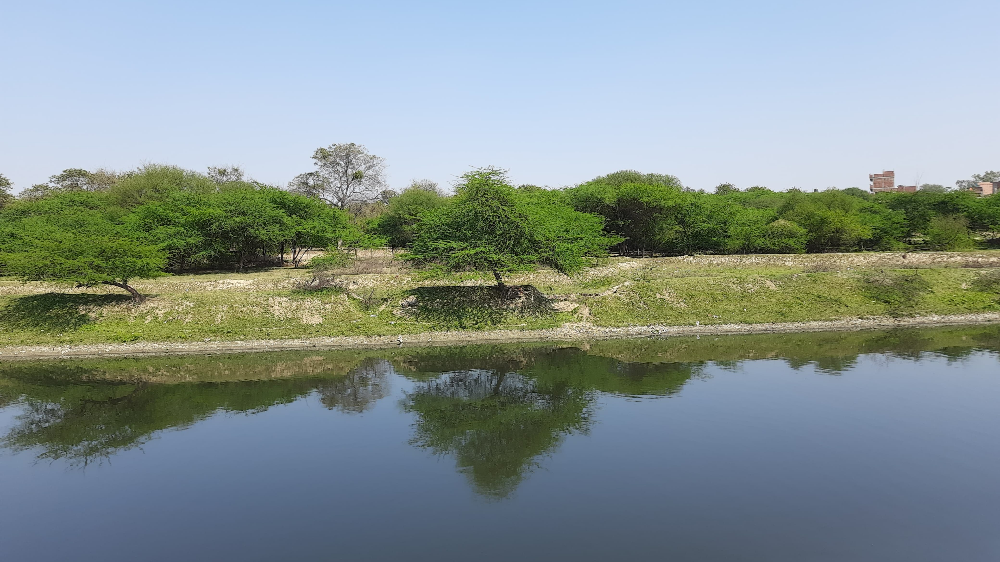
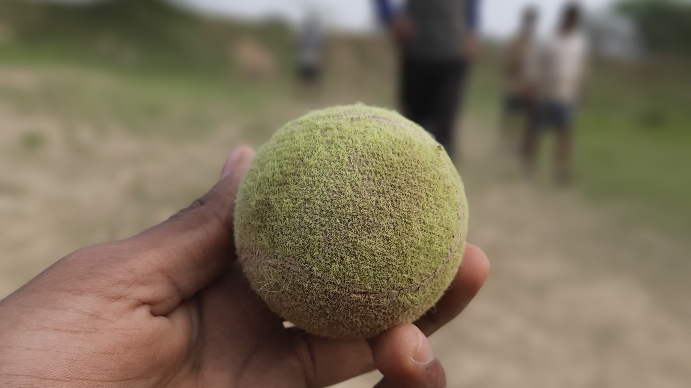

......................

The image is a beautiful sunset in a rural area. The sky is a deep blue with streaks of pink and orange, and the sun is setting behind the trees. The trees are silhouetted against the sky, and there are a few houses in the distance. The image is very peaceful and serene. The colors are beautiful, and the light is soft and warm. It's a perfect example of a sunset in the countryside.
Watching Cricket from VIP-BOX

Varuna River from Cricket Ground View
A RED ball for Cricket

Tennis ball
Evening sunset
VIP-Box